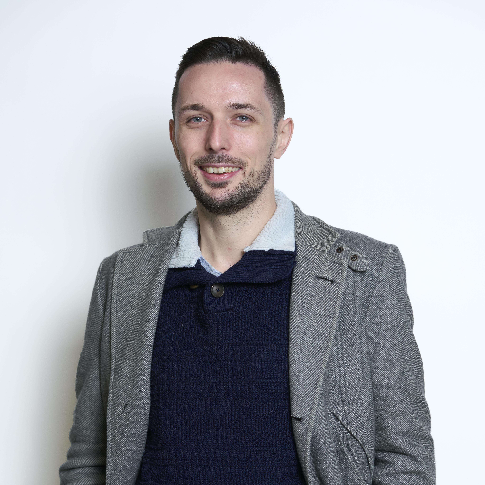

Hello Moi c'est Corentin MARLIERE !
Futur Développeur Web
Bienvenue sur mon Portfolio !

Hello Moi c'est Corentin MARLIERE !
Futur Développeur Web
Bienvenue sur mon Portfolio !

Jeune de 28 ans et en pleine reconversion professionnelle !
Après plusieurs années dans la restauration, une envie de renouveau et une passion pour l'informatique m'ont donné le courage de me lancer afin de réaliser un rêves et reprendre mes études dans le développement Web !
2024 - 2026
Diplôme RNCP : développeur WEB
Obtention prévu en 2026
Avril 2017
Diplôme : brevet d'aptitude aux fonctions d'animateur
Obtention du BAFA
brevet2011 - 2014
Diplôme : service et commercialisation en restauration
Obtention du BEP en 2013
Obtention du BAC en 2014
Novembre 2024 à Ajourd'hui
Acquisition de compétences dans le développement Web
Travail pratique en autonomie grâce au travail en projets, cette formation nous apprend à travailler comme en entreprise. Apprentissage de plusieurs languages (PHP, Javascript, SQL, etc.)
Juillet 2020 - Octobre 2024
Cet emploi m’a amené plus de responsabilités (Gestion des stocks et commandes fournisseurs) ; J’ai également été amené à travailler seul mais aussi avec une équipe sous ma direction.
Juin 2018 - Juillet 2020
Lors de cet emploi, j’ai appris à être en contact avec la clientèle mais surtout à réussir à répondre à ses besoins. J’ai également appris à m’adapter dans toutes situations.
Septembre 2014 - Juin 2018
Après un service civique chez IFAC Nord, un contrat m'a été proposé.
Cette emploiu m'aura permit de financer mon permis après ma scolarité (obligatoire en restauration) en plus de me permettre de m'imisser dans le monde du travail !